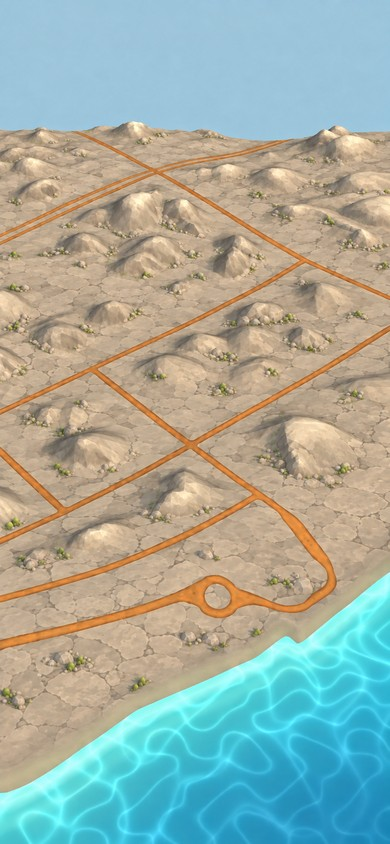
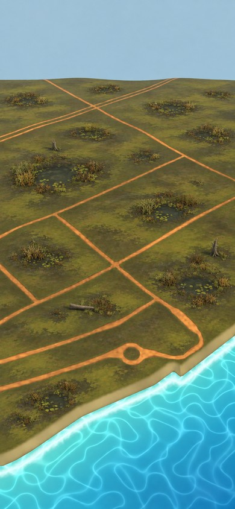

Concepts. The rule: one silhouette per resource, never changed; a biome skin; a biome bed; a biome size, large only in the resource's home biome (wheat in Meadow, softwood in Grove, stone in Stonefield). Each column edits that biome's chosen master; only the three patches were added. Map imagery © Mapbox © OpenStreetMap.
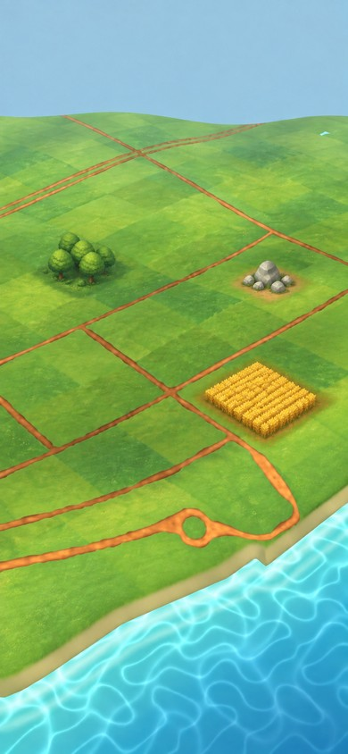
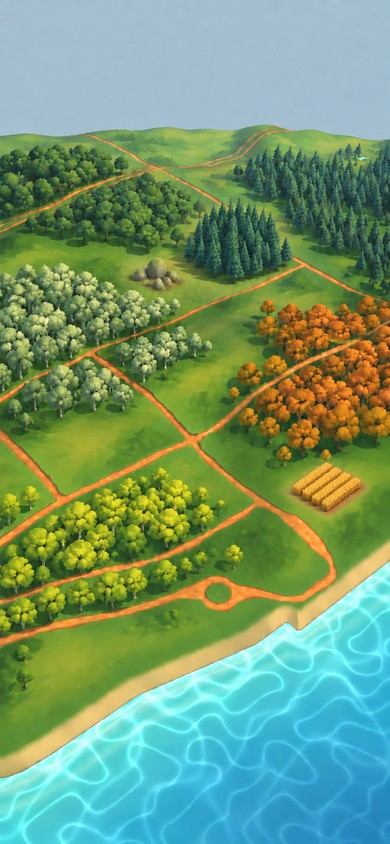
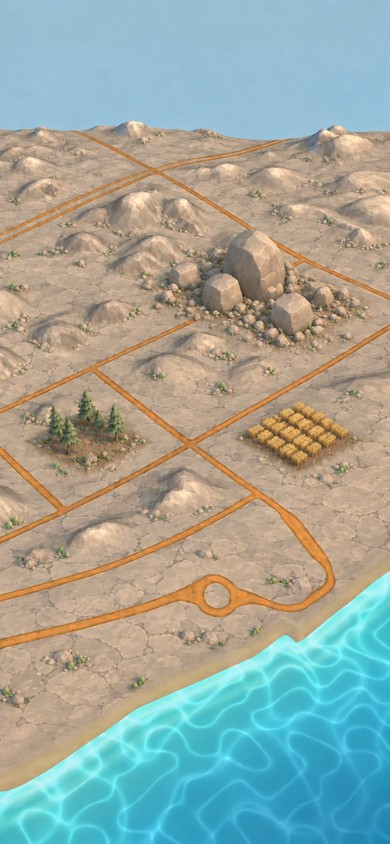
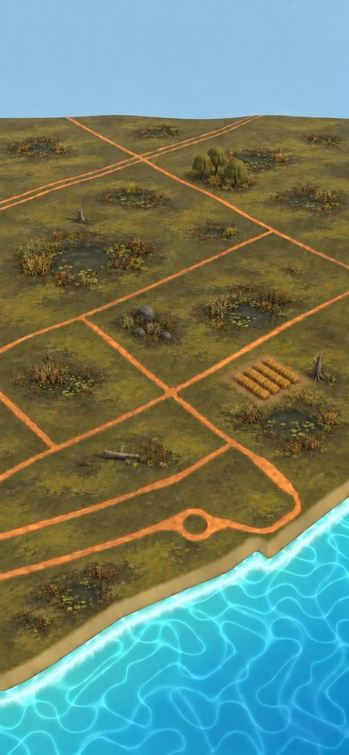
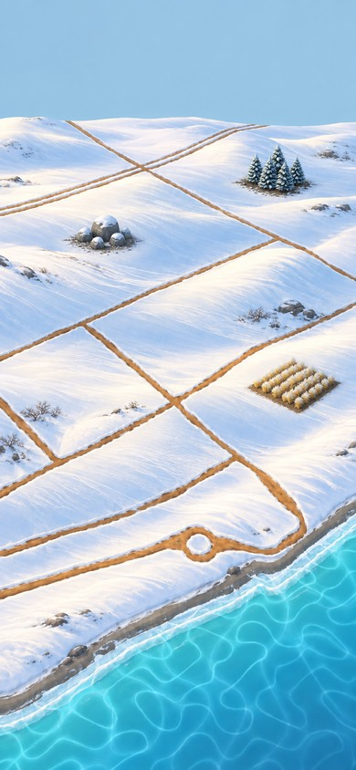
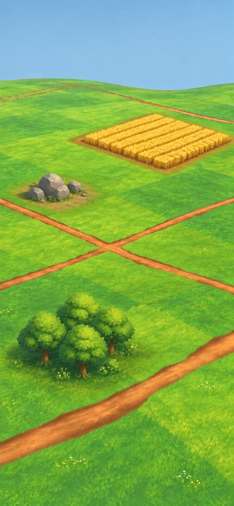
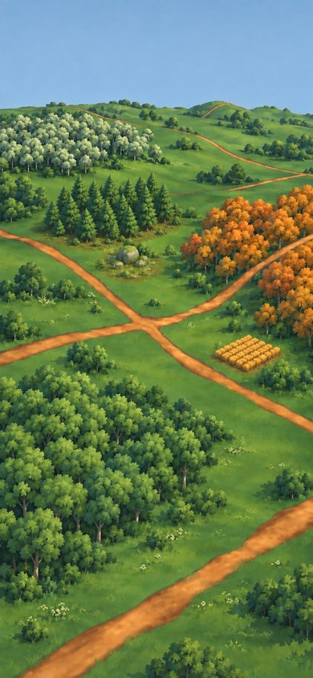
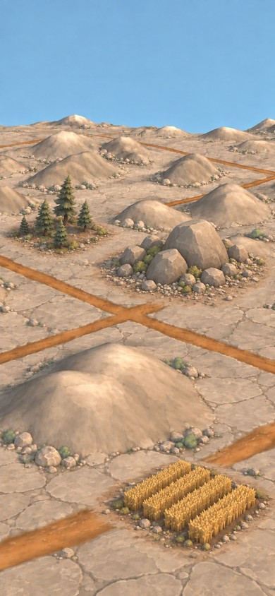
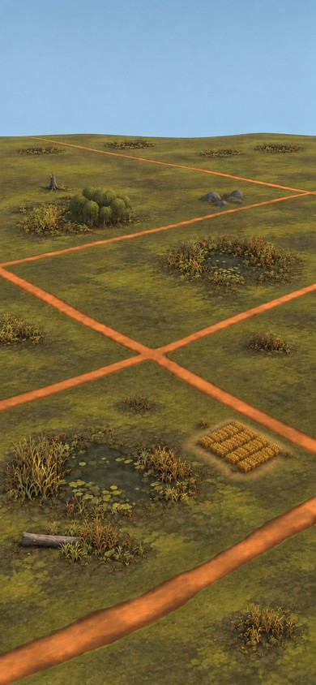
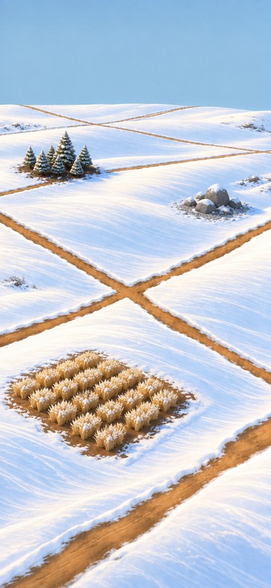
| Meadow | Grove | Stonefield | Marsh | Snow | |
|---|---|---|---|---|---|
| softwood | round broadleaf, fresh green | the grove's own kind, large | wind-bent pine, dusty green | alder or willow, dark olive | snow-dusted conifer |
| stone | grey boulders, grass at the base | mossy boulders | the slab grey-tan, rubble, large | dark wet stone, reeds | grey with snow caps |
| wheat | ripe gold, large | gold, in a clearing | straw-gold on terraced earth | darker gold on a raised dry bed | pale straw with frost tips on cleared earth |
| bed | a small apron of the resource's own ground (forest floor, scree, dirt) blending softly into the biome; never a hard-edged slab | ||||

